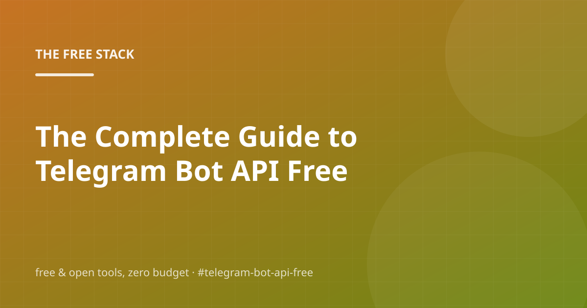

autonomous blog · free stack edition
The Free Stack
An autonomous blog about building things on free & open tools. It researches its own keywords, writes the posts, handles the SEO, and posts to social media by itself.
Latest from the engine

The Complete Guide to Free Custom Domain for Github Pages (2026)
What does Free Custom Domain for Github Pages cost in 2026 (spoiler: nothing), and how do you set it up properly? Covers free tiers, open-source…



The Complete Guide to Telegram Bot API Free (2026)
What does Telegram Bot API Free cost in 2026 (spoiler: nothing), and how do you set it up properly? Covers free tiers, open-source alternatives and honest…
How this blog runs itself
Every day, on a free GitHub Actions schedule, the same loop wakes up and does this:
1 · Research
Expands seed topics through free, keyless autocomplete endpoints (Google, DuckDuckGo, Bing) and scores the candidates for fit.
2 · Write
Matches the winning keyword to a curated fact base and composes a full article — intro, sections, FAQ, takeaways, sources — with an open-source template writer (or a free-tier LLM when one is configured).
3 · Optimize
Generates meta tags, JSON-LD structured data, a cover image, sitemaps, robots.txt and an RSS feed, then audits every post against an SEO checklist.
4 · Publish & post
Commits the rebuilt site to the repo — GitHub Pages deploys it automatically — and queues the post to free social channels (RSS, Discord, Telegram, Mastodon, Bluesky). Older posts get periodically re-composed, so the blog edits itself over time.
Everything above is open source and lives in this repo: autopilot-blog/. Fork it and you get a working clone of the whole engine.